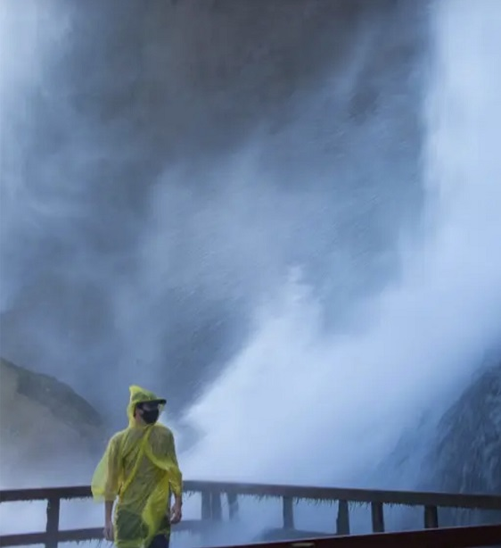

Stan's Page
welcome to my page, below are some links to relevant places you can find more about me
Experience
Figure Eight Federal - Image Analyst/Annotator
Simmons University - Technology Assistant
Wentworth Intitute of Technology -
Bachelors of Science Computer Engineer
Links to Socials
linkedin
twitter
instagram
resume
Interests
technology - old/new hardware, simple coding/scripting, and data collecting
cars - mainly old vehicals like Porsche 944, BMW M3 E30, Mazda Rx-7 FC3S, and Subi's
comics - DC comics fan, but i do read manga and manwhua
video games - retro games, fighting games and FPS's
working out - doing my best)), also i like cycling [photo of my bike below]
photography - usually ill photograph neat cars, buildings usually to capture the verticality
Photos
